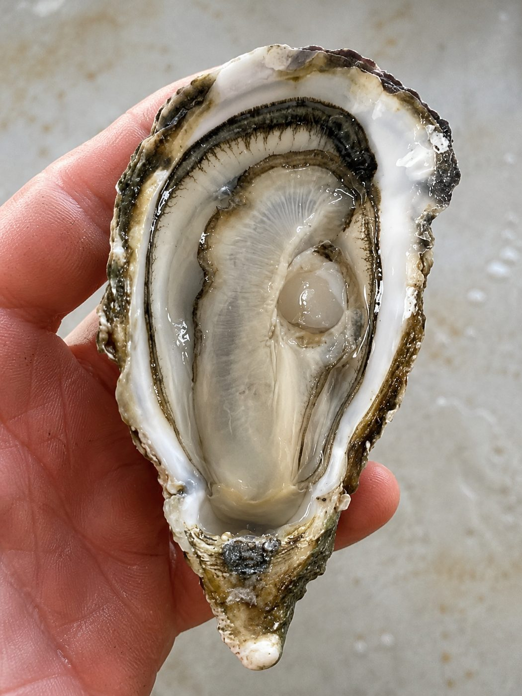
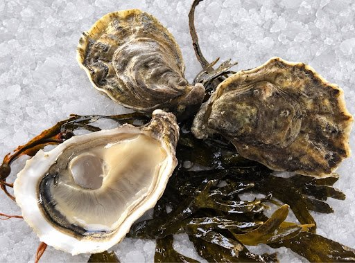
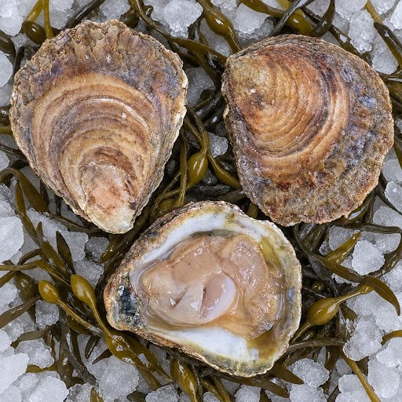
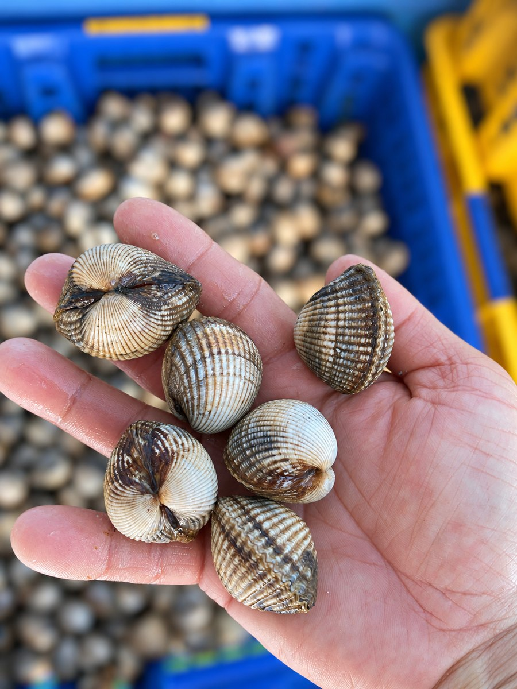
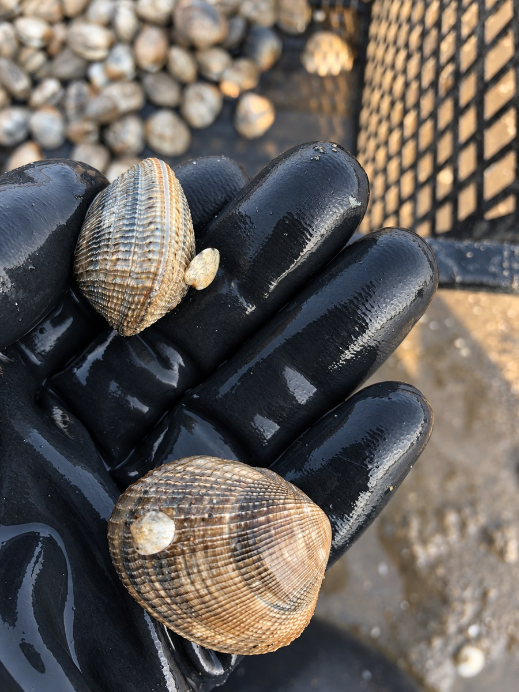
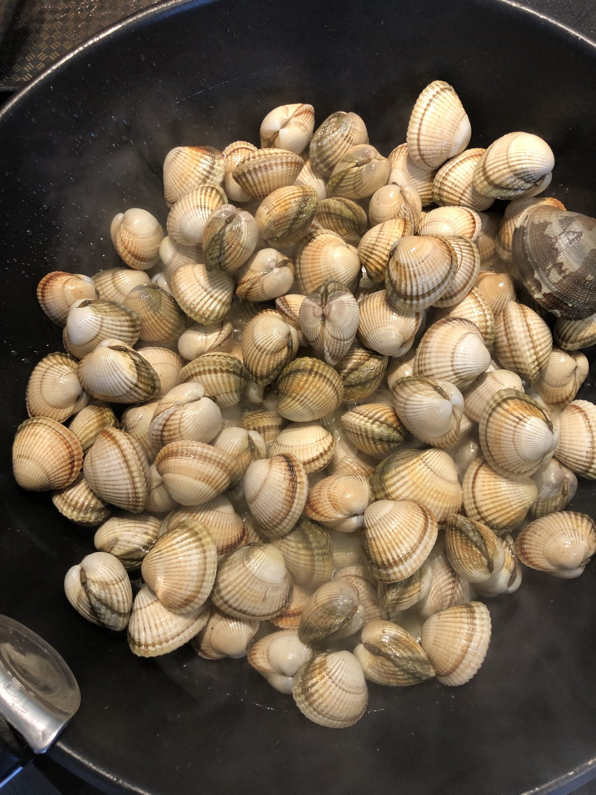
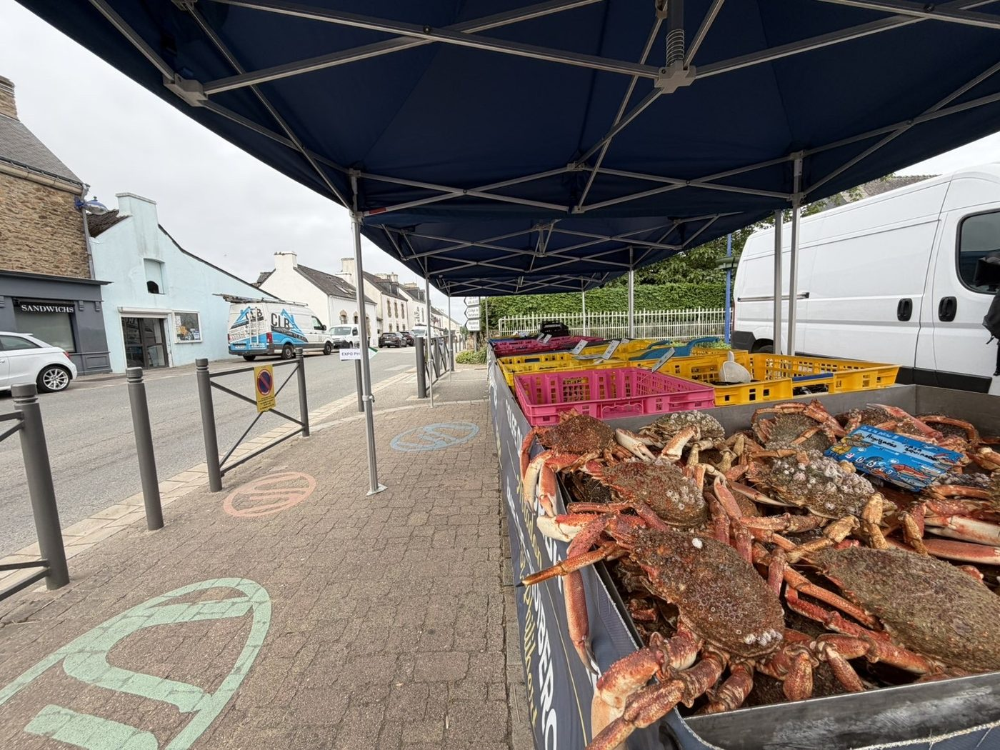

Huîtres Creuses « Fines »
Notre huître creuse la plus fine, à la chair délicate et iodée.
Calibres : de la petite N°5 à la grosse N°1
Emplacement médaille
Vente directe producteur
Coquillages et crustacés de Bretagne Sud, vendus exclusivement sur nos marchés — de la mer à votre table, sans intermédiaire.
Retour à l'accueil
Notre huître creuse la plus fine, à la chair délicate et iodée.
Calibres : de la petite N°5 à la grosse N°1

Élevées en casier australien, chair charnue et régulière.
Calibres : de la N°4 à la N°1
Élevées à plat, en pleine mer, pour une coquille plus solide.

Une variété rare et recherchée, au goût iodé et prononcé.

Récoltées à la main sur l'estran, à marée basse.

Récoltées à la main sur l'estran, à marée basse.
Petits coquillages iodés, à déguster nature avec une pointe de beurre.

Moules de bouchot, chair dorée et goûteuse.
Selon saison
Coquillage fin, au goût marqué, idéal en persillade.
Selon saison

Araignées de mer, chair fine et sucrée.
Crabe charnu de Bretagne Sud, à déguster froid ou chaud.
Le plus noble de nos crustacés, sur commande.
Retrouvez nos produits frais en vente directe au chantier et sur nos marchés (selon marées et saisons).
Avis aux amateurs : une grande variété de fruits de mer est également disponible sur commande (langoustes, amandes, couteaux, bulots, etc.). Contactez-nous directement pour vos commandes spéciales !